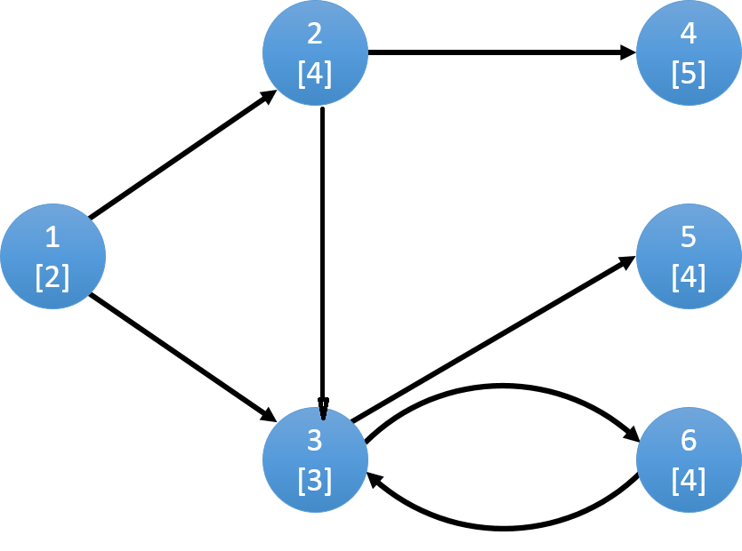

Tarjan算法可用于求图的割点，割边，连通分量。本文对hihocoder上52~55周关于tarjan算法的内容进行一个总结。
割点，割边与Tarjan
在介绍tarjan算法之前有必要知道割边与割点的概念。
割边：在连通图中，如果删除了某条边后该图不再连通，则称这样的边为割边或桥
割点：在连通图中，如果删除了某个点及与这个点相连的边后该图不再连通，则称这样的点为割点
在一个连通图的深度优先搜索树中：
- 对根节点u，若其有两棵或两棵以上的子树，则该根结点u为割点
- 对非叶子节点u（非根节点），若其某棵以v为根的子树中的节点均没有指向u的祖先节点的边，说明该子树只通过边uv与u相连，则删除u之后，根结点与该棵子树的节点不再连通，节点u为割点，边uv为割边。
对于情况1：
对每个节点记录一个parent值，表示该点父亲节点的序号，初始为-1。dfs过程中统计每个节点的子树个数，如果大于1并且parent等于-1，则该点为割点。
对于情况2：
对每个节点记录两个值：order和back，分别表示该点的dfs序号和最远能回溯到的祖先的dfs序号。对于当前访问节点u及它的相邻节点v来说，
$$
back[u]=
\begin{cases}
\min(back[u], back[v]), &\text{ visit[v] == false } \\
\min(back[u], order[v]), &\text{ visit[v] == true and v != parent[u] }
\end{cases}
\tag {9}
$$visit等于true表示节点被访问过
基于以上定义，情况2可描述为：
对于树中的边(u,v)，若back[v]≥order[u]时，则u为割点。若back[v]>order[u]时，则(u,v)为割边。
tarjan伪代码：
具体代码详见：Hiho 1183
边的双连通分量
定义：对于一个无向图的子图，当删除其中任意一条边后，不改变图内点的连通性，这样的子图叫做边的双连通子图。而当子图的边数达到最大时，叫做边的双连通分量。
如何求边的双连通分量呢？一种直观的做法是：使用tarjan求出所有的割边后，然后再用dfs求出每个连通分量。
这个过程可以融入到trajan算法中，伪代码如下:
具体代码详见：Hiho 1184
强连通分量
定义：对于有向图上的2个点a,b，若存在一条从a到b的路径，也存在一条从b到a的路径，那么称a,b是强连通的。对于有向图上的一个子图，若子图内任意点对(a,b)都满足强连通，则称该子图为强连通子图。非强连通图有向图的极大强连通子图，称为强连通分量。
具体做法与边的连通分量相似，差别在于：
- 访问点u相邻点v时，不仅需要考虑v是否被访问，还需要考虑v是否还在栈中
- parent不需要记录
对于1，原因在于两个点有一条单向边相连并不是强连通分量，下图是个例子：

上图中3,6组成了一个强连通分量，先从栈中弹出(假设程序先访问3)，也就是说3虽然访问过了，但并不在栈中。2有条边与3相连，如果不判断3是否在栈中，则back[2] < order[2], 最终程序会判定1,2为一个强连通分量。
对于2，Tarjan求边的连通分量时需要v != parent[u]是因为如果u,v之间只能靠uv连接时，去掉uv后u，v不连通。而判断有向图的强连通分量并不需要去边操作
修改后的伪代码为：
具体代码详见：Hiho 1185
点的双连通分量
定义：对于一个无向图的子图，当删除其中任意一个点后，不改变图内点的连通性，这样的子图叫做点的双连通子图。而当子图的边数达到最大时，叫做点的双连通分量。
因为每存在一个割点，区域就被一分为二，最后点的双连通分量的个数等于割点数加一。
具体代码详见：Hiho 1190